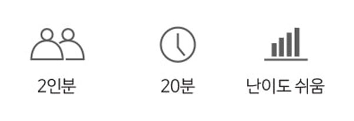
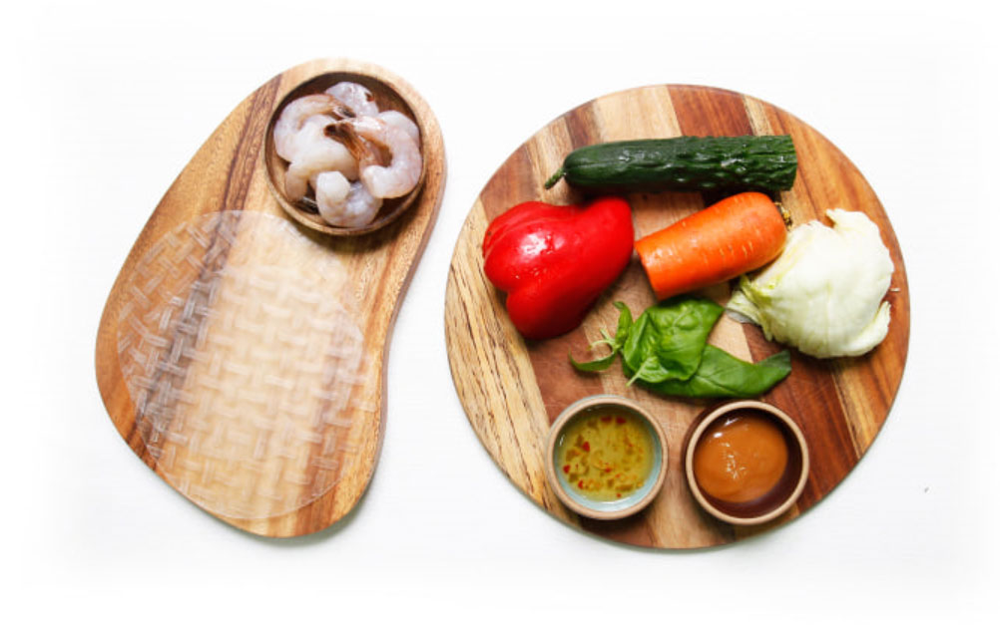

- 식 품
본 찬
본 찬
셰프의 비밀스런 레시피로 맛있는 요리를 만들어 보세요.
쉬림프
썸머 롤
내 몸에 채소가 필요할때 상큼, 시원, 쉬림프 썸머롤
- 탱글 탱글 주황색 새우와 아삭 아삭 신선한 야채들, 가볍고 부드러운 버미셀리 면발과
은은하게 퍼지는 초록의 바질 향이 눈으로 한번 입으로 또 한번,
긍정의 기운을 불어 넣어주는 힐링푸드가 여기 왔습니다. - 좋지 못한 음식들로 한동안 내 소중한 혀와 위장을 괴롭혔다면
오늘만큼은 나를 위해 건강하고 맛있는 한끼를 대접해주세요.
작지만 기분이 좋은 변화가 생길 거예요.
쉬림프 썸머 롤의 요리 하는 재미


재료 준비
- 버셀리면은 끓는 물에
2분정도 삶아 찬물로 헹구어 준다.
체에 걸러 물기를 빼둔다. - 새우는 끓는 물에 1분간 데친 뒤
찬물로 헹구어 준다. 새우꼬리는
제거하고 포 뜨듯이 반을 가른다. - 오이, 파프리카는 속을 제거하고
6cm 정도 길이로 채썰어 준다. - 당근은 6cm정도 길이로 채썰어 준다.
바질 잎은 길게 반으로 나눠준다.
만드는 법
라이스 페이퍼 접는 법
# 라이스 페이퍼에 모든 재료를 다 넣고 한번에 말아도 되지만, 조금 더 타이트 하고
단단하게 말기 위해서는 1차로 양상추 말이를 먼저 해주는 것이 좋다
# 라이스페이퍼를 말 때는 바닥에 늘어 붙지 않도록 코팅 도마나 접시 위에서
작업을 하는 것이 좋다